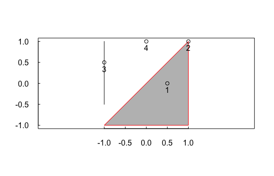

Chapter 4 Spatial data operations
code
visualation
R
공간정보분석 4장 코드
sf: 지리 공간 벡터 데이터(vector data) 분석을 위한 패키지raster: 지리 공간 레스터 데이터(raster data)를 처리 및 분석하는데 사용spData: 37개의 지리공간 데이터셋이 내장spDataLarge: 지리 공간 데이터 샘플을 내장
# 패키지 로드
library(sf)
library(raster)
library(dplyr)
library(spData)4.1 소개
4.2 벡터 데이터에 대한 공간 작업
- 이번 세션은 sf 패키지 에서 단순 기능으로 표현된 벡터 지리 데이터에 대한 공간 연산의 개요를 제공함
4.2.1 Spatial subsetting(공간 부분 집합)
- 공간부분집합의 예는 spData의
nz의 및nz_height데이터 세트를 활용
nz # MULTIPOLYGON의 해당되는 정보
canterbury <- nz %>% filter(Name == "Canterbury")
canterbury # MULTIPOLYGON
canterbury_height <- nz_height[canterbury, ]
canterbury_height # POINT
nz_height[canterbury,]
plot(nz_height[canterbury,])
nz_height[canterbury, , op = st_disjoint]
plot(nz_height[canterbury, , op = st_disjoint])
nz_height[canterbury, 2, op = st_disjoint]
plot(nz_height[canterbury, 2, op = st_disjoint])st_intersects()를 활용한 공간 부분 집합 추출
sel_sgbp <- st_intersects(x = nz_height, y = canterbury) # 두 공간에서 겹치는 지역은 1로 출력 아닌 것은 empty로 출력
class(sel_sgbp)
#> [1] "sgbp" "list"
sel_logical <- lengths(sel_sgbp) > 0 #
canterbury_height2 <- nz_height[sel_logical, ]
canterbury_height2- filter()함수를 활용한 공간부분집합 추출
canterbury_height3 <- nz_height %>%
filter(st_intersects(x = ., y = canterbury, sparse = FALSE))
#아래 두개의 차이 확인
st_intersects(x = nz_height, y = canterbury, sparse = FALSE)
st_intersects(x = nz_height, y = canterbury)4.2.2 Topological relations(위상 관계)
- 위상 관계는 객체의 간의 공간적 관계를 설명함
이해를 돕기 위해 아래와 같이 (a) 폴리곤, (l) 라인, (p) 포인트를 생성함
# create a polygon a_poly <- st_polygon(list(rbind(c(-1, -1), c(1, -1), c(1, 1), c(-1, -1)))) a <- st_sfc(a_poly) # create a line l_line <- st_linestring(x = matrix(c(-1, -1, -0.5, 1), ncol = 2)) l <- st_sfc(l_line) # create points p_matrix <- matrix(c(0.5, 1, -1, 0, 0, 1, 0.5, 1), ncol = 2) p_multi <- st_multipoint(x = p_matrix) p <- st_cast(st_sfc(p_multi), "POINT") plot(a, col = c("gray"), border = c("red")) plot(l,add = T) plot(p,add = T) box(col="black") axis(side = 1, at = seq(-1.0, 1.0, 0.5), tck = 0.02) axis(side = 2, at = seq(-1, 1, 0.5), tck = 0.02, las = 1) text(p_matrix,pos = 1) # 1 = 6시 2 = 9시 3 = 12시 4 = 3시
- 폴리곤 a에 교차하는 p포인트는?
- 1번과 2번 포인트가 삼각형 내에 또는 위에 있음
st_intersects(p, a)를 활용하여 구할 수 있음sparse = FALSE로 설정하면 TRUE or FALSE로 출력
st_intersects(p, a) #> Sparse geometry binary ..., where the predicate was `intersects' #> 1: 1 #> 2: 1 #> 3: (empty) #> 4: (empty) st_intersects(p, a, sparse = FALSE) #> [,1] #> [1,] TRUE #> [2,] TRUE #> [3,] FALSE #> [4,] FALSE- 폴리곤 a에 교차하는 p포인트는?
st_intersects()의 반대는st_disjoint()이며, 이는 선택 객체와 어떤 식으로든 공간적으로 관련되지 않는 객체만 반환(참고 [, 1]은 결과를 벡터로 변환)
st_disjoint(p, a, sparse = F)[, 1] #> [1] FALSE FALSE TRUE TRUEst_within()는 완전히 객체 내부에 있는 객체들만 TRUE로 출력- 삼각형 내부에 있는 1번째 포인트만 TRUE로 출력
st_within(p, a, sparse = FALSE)[, 1] #> [1] TRUE FALSE FALSE FALSEst_touches()는 삼각형 위(테두리)에 있는 객체들 출력- 삼각형 테두리에 있는 2번째 포인트만 TRUE로 출력
st_touches(p, a, sparse = FALSE)[, 1] #> [1] FALSE TRUE FALSE FALSEst_is_within_distance는 삼각형에서 주어진 거리보다 가까운 객체들을 반환
sel <- st_is_within_distance(p, a, dist = 0.9) # can only return a sparse matrix lengths(sel) > 0 #> [1] TRUE TRUE FALSE TRUE